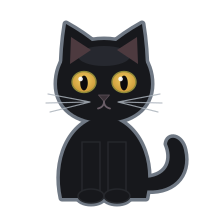

The Nimrod game
Step 1: your Home
Your Home is your profile: a dashboard you make your own. On Home you pick a starting point — plain Nimrod, a moving scene like Fall, or one of the rooms — and then change anything on it: the scene, what is on it, where things sit. Picking one again never makes a second copy.

Nimrod the cat can walk you through your Home: picking a starting point, the bar, the settings menu and the editing tools. It is also under Show me how in the ⚙ menu there.
Nimrod’s settings
Two things to try there
- Pick your room. Press ⚙ Edit on the bar (or M), then press Theme until you find a room you like. The live ones move.
- Make the sign yours. Press Panel ▸ on the bar until the sign has the outline around it, and change its Words, its Font and the Colour of the words in the menu. The picture works the same way: Picture and Frame. Then press Save.
More of the game is on its way. Back to Home